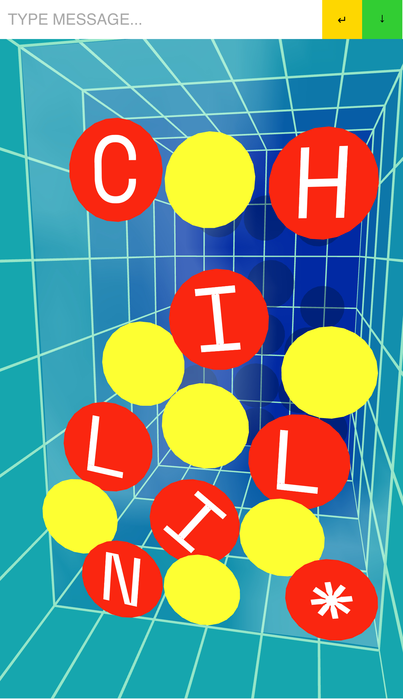
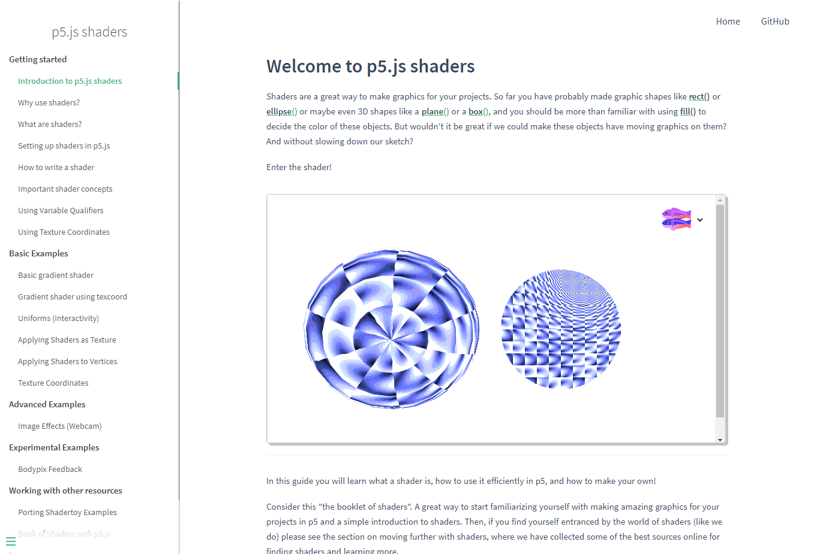

Showcase
这是p5.js展示区，由Ashley Kang 在2019年建立，目前由Connie Liu. 策划。我们在展示人们如何使用p5.js使创意工作，学习和开源变得更加有趣和包容。我们在一起，共同建立社区。在2019年夏季，我们邀请了一些创作者来分享更多有关他们如何通过不同项目和作品使用p5.js。
2020年夏季展示区现已开始接受报名，提名某人的p5.js作品或您自己的作品在这里进行展示!
提名作品Featuring
Programmed Plotter Drawings
Roni Cantor

Sine waves and lerps generated in p5.js, exported as SVG, and drawn with a plotter and pens.
Chillin'
Dae In Chung
An interactive typographic poster that uses a mobile device's motion sensor with p5.js.
p5.js Shaders
Casey Conchinha, Louise Lessél
A resource for learning the what, why, and how of using shaders in p5.js.
Airi Flies
Phuong Ngo

In this game developed with p5.play, help Airi fly by saying PEW. Created to encourage people to get out of their comfort zone and feel more confident about themselves regardless of what they do and how they look or sound.
Qtv
Qianqian Ye

A video channel with 1-minute videos in Mandarin about creative coding, art, and technology, including p5.js tutorials for beginners. Available on YouTube, Instagram, Bilibili, and TikTok.
Moving Responsive Posters
Moon Jang, Xin Xin, and students

Browser-based moving posters that use graphical systems, transformation methods, and p5.js to address the connotations of a word less than 8 letters. Designed by students for a graphic design course (Visual Narrative Systems) at the University of Georgia.